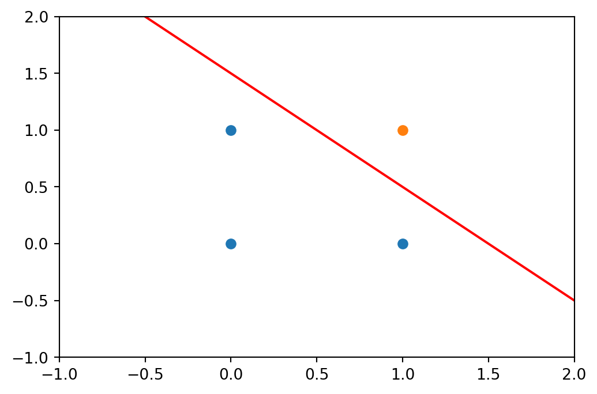

flowchart LR
subgraph node
direction LR
node2_1((SUM)) --> node2_2((STEP))
end
node1_1((x_1)) --w1--> node2_1
node1_2((x_2)) --w2--> node2_1
node2_2 --> node3((y_hat))
1 Perceptron
DL은 인공신경망(ANN, Articial Neural Network)이 여러개(Deep)의 층(Layers)로 존재하는 구조를 말하는 것입니다.
여기서 주목할 것은 신경망 입니다. 인공 신경망은 생물학적 신경망을 모방하여 설계된 만큼 이에 대한 작동기전을 이해하는 것이 중요하다고 생각합니다.
본 장에서는 생물학적 신경망의 가장 기초가되는 뉴런(Neuron)에 대한 이해를 기반으로 인공 신경망의 가장 기초가되는 퍼셉트론(Perceptron)에 대하여 이해해 보고자 합니다.
1.1 What is a ‘Perceptron’?
퍼셉트론은 인공신경망의 가장 기초가 되는 개념이고 이를 이해하기 위하여 생물학적 신경망의 가장 기초가 되는 뉴런(Figure 1.1)에 대하여 이해할 필요가 있습니다.
뉴런의 구조는 다양하게 하지만 우리가 집중하고자 하는 곳은 크게 3가지 부분으로 구성되어 있습니다.
- 외부 자극등 정보를 수신하는 수상돌기(Dendrite)
- 수신된 정보를 신호를 만들어 내는 핵(Nucleus)
- 신호를 신경절달 물질로 만들어 내는 축삭돌기(Axon)+시넵스(Synapse)
여기서 주목할 것은 뉴런은 정보를 입력받아 내부적인 신호를 생성하여 다음 뉴런에 정보를 전달한 다는 것입니다.

이러한 뉴런의 작동기전을 모방하여 만들어진 것이 퍼셉트론(Figure 1.2)입니다.
퍼셉트론은 1957년 프랑크 로젠블라트가 제안한 것으로 퍼셉트론은 이러한 뉴런의 작동기전을 모방하여 정보를 입력(Input)받아 연산을 통해 출력(Output)을 생성하도록 설계되었습니다.
이러한 정보의 흐름 또는 연산 절차를 다른 말로 Forward Propagation이라 합니다, 향후 논의 될 Back Propagation과 대비되는(?) 개념입니다.
Figure 1.2 에서 원은 노드(Node)라고 하면 노드간 연결된 선을 엣지(Edge)라고 합니다. 엣지상에 존재하는 w는 가중치(Weight)하고 합니다.
첫번째 노드의 x_1과 x_2는 입력값을 말하고, 두번째 노드는 내부적으로 SUM과 STEP으로 구성된 활성함수를 말하며, 마지막 노드의 z는 출력값으로 노드의 활성 정도를 말합니다.
노란색 노드에서는 2단계 계산이 발생합니다. 하나늗 입력값의 뉴런에서는 신호의 세기를 계산하는 Weighted Sum(Equation 1.1) 과 뉴런의 여부를 계산하는 Step Function(Equation 1.2) 으로 구성되어 있습니다.
결과적으로 퍼셉트론의 출력값(\hat{y}=h_{w,b}(x)=sign(\textbf{w}^{T}\textbf{x}+b))은 (-1, 0, 1)로 3가지를 갖게 됩니다. 이 결과값을 실제의 값(y)와 비교(Loss Function)하여 가중치(w)를 업데이트 하여 최적해가 아닌 단순 solution(?)을 찾는 것이 퍼셉트론입니다.
z = b + w_{1}x_{1} + w_{2}x_{2} + \cdots + w_{n}x_{n} = b + \textbf{w}^{T} \textbf{x} \tag{1.1}
step(z) = sign(z) = \begin{cases} -1 & z < 0 \\ 0 & z = 0 \\ 1 & z > 0 \end{cases} \tag{1.2}
퍼셉트론에서 사용되는 계단함수
일반적으로 Sign function을 가장 많이 사용하지만, 이진값(0, 1)만을 갖는 Heavisde step function이 사용되기도 합니다. Clsiffication 문제에서 직선상의 Observation값은 0 , Weight와 같은 방향은 1, 다른 방향은 -1로 처리하는 것이 보다 용이하기에 우리는 Sign function을 주로 사용합니다.
heavisde(z) = \begin{cases} 0 & z < 0 \\ 1 & z >= 0 \end{cases}
1.2 Bit-wise operator(단순 논리 회로)
앞서 보았던 퍼셉트론을 분류(Classification)을 수행해보며 보다 자세하게 살펴보겠습니다. 특히 분류의 문제는 향후 ANN 및 CNN 등 다양한 문제를 해결하는데 사용되는 기법으로 향후 학습을 진행하면서 병렬적으로 작동기전에 대하여 비교하기가 용이할 것으로 생각됩니다.
분류문제 중 가장 간단한 예시로 Bit-wise operator(단순 논리 회로)에 대한 내용을 살펴보겠습니다. 논리회로는 0과 1로 구분된 2개의 input을 받아 0또는 1을 output으로 출력하는 회로입니다.
단순 논리 회로는 AND, NAND, OR 그리고 XOR게이트로 구성되어 있으며 입력에 따른 출력이 다음의 진리표(Table 1.1 )로 나타낼 수 있습니다.
| x_1 | x_2 | y |
|---|---|---|
| 0 | 0 | 0 |
| 1 | 0 | 0 |
| 0 | 1 | 0 |
| 1 | 1 | 1 |
| x_1 | x_2 | y |
|---|---|---|
| 0 | 0 | 1 |
| 1 | 0 | 0 |
| 0 | 1 | 0 |
| 1 | 1 | 0 |
| x_1 | x_2 | y |
|---|---|---|
| 0 | 0 | 0 |
| 1 | 0 | 1 |
| 0 | 1 | 1 |
| 1 | 1 | 1 |
| x_1 | x_2 | y |
|---|---|---|
| 0 | 0 | 0 |
| 1 | 0 | 1 |
| 0 | 1 | 1 |
| 1 | 1 | 0 |
1.3 Perceptron 으로 구현
위의 진리표(Table 1.1 )의 내용을 퍼셉트론으로 구현해보겠습니다. 이를 위해 AND게이트를 예를 들도록 하겠습니다.
AND게이트는 x_1 과 x_2가 모두 1인 경우 y를 1로 출력하는 논리 회로 입니다. 이를 퍼셉트론으로 표현하면 w_1, w_2, \theta로 표현할 수 있고 이러한 선형판별식(Equation 1.3) 식은 아래와 같습니다.
y = \begin{cases} 0 & w_1*x_1 + w_2*x_2 \leq \theta \\ 1 & w_1*x_1 + w_2*x_2 > \theta \end{cases} \tag{1.3}
위의 선형판별식은 아래와 같이 그림으로 표현이 가능합니다. 다만, 가중치 w 와 임계치 \theta 의 조합은 무수히 많이 존재함을 유의해야 합니다.((?fig-egAndGate ) 의 적색선은 임의로 표현한 직선이고 이 직선이 무수히 많다는 의미)

단순 논리 회로(XOR게이트 제외)의 선형판별식을 코드로 구현하면 다음과 같습니다. 여기서 일반적으로 향후 Deeplearning의 표현방법을 따라 임계치인 \theta 를 편향(bias)인 -b로 치환한 수식을 사용하겠습니다.
y = \begin{cases} 0 & b + w_1*x_1 + w_2*x_2 \leq 0 \\ 1 & b + w_1*x_1 + w_2*x_2 > 0 \end{cases} \tag{1.4}
변형된 수식(Equation 1.4 )에 기초하여 진리표(Table 1.1 )상의 게이트를 코드로 구현하면 아래와 같습니다.
1import numpy as np
# AND gate
def AND(x1, x2):
x = np.array([x1, x2])
2 w = np.array([0.5, 0.5])
b = -0.7
3 tmp = np.sum(w*x) + b
if tmp <= 0:
return 0
elif tmp > 0:
return 1
# NAND gate
def NAND(x1, x2):
x = np.array([x1, x2])
w = np.array([-0.5, -0.5])
b = 0.7
tmp = np.sum(w*x) + b
if tmp <= 0:
return 0
elif tmp > 0:
return 1
# OR gate
def OR(x1, x2):
x = np.array([x1, x2])
w = np.array([0.5, 0.5])
b = -0.7
tmp = np.sum(w*x) + b
if tmp <= 0:
return 0
elif tmp > 0:
return 1- 1
-
Vector 연산의 최적화를 위하여
numpy를 기본적으로 사용한다. - 2
-
w와b는 임의로 할당한다. 다만,NAND및OR는AND의 부호와 다름에 주의하자. - 3
- weighted sum은 가중치를 곱하여 더한 값으로 내적과 유사함을 유의하자.
1.4 MLP
다중 퍼셉트론은 퍼셉트론이 여러층으로 구현된 형태를 말합니다. 층을 여러개 쌓아서 보다 복잡한 문제를 해결할 수 있고, 추후 Deeplearning에서 여러층의 신경망을 쌓는 방식의 기초라고만 이해해 두겠습니다.
앞서 1층 퍼셉트론으로는 단순 논리 회로 중 선형적인 게이트만을 구현할 수 있었습니다. 그렇다면 XOR게이트는 해결할 수 없을까요? 이를 해결하기 위한 것이 다층 퍼셉트론 입니다.
가령 XOR게이트 문제를 NAND와 OR게이트를 조합한 출력값을 AND게이트의 입력값으로 받게 된다면 XOR게이트를 구현할 수 있습니다. 국소적인 문제해결을 결합하여 전체 문제를 해결하는 방식으로 이해됩니다.
flowchart LR x1((x1)) & x2((x2)) ---> nand[NAND] & or[OR] nand --s1---> AND ---> y[y] or --s2---> AND
XOR의 게이트를 다른 게이트의 조합을 활용한 진리표는 아래와 같습니다. 위의 그림에서 보듯이 x1과 x2의 입력값을 받아 NAND게이트는 s1의 출력값을 OR게이트는 s2의 출력값을 생성하며, 다시 s1과 s2를 입력값으로 받아 AND를 통과시켜 최종적으로 XOR게이트의 진리표를 다시 그릴 수 있습니다.
| x_1 | x_2 | s_1 | s_2 | y |
|---|---|---|---|---|
| 0 | 0 | 1 | 0 | 0 |
| 1 | 0 | 1 | 1 | 1 |
| 0 | 1 | 1 | 1 | 1 |
| 1 | 1 | 0 | 1 | 0 |
XOR게이트의 진리표
위의 진리표(Table 1.2 )를 코드로 구현하면 아래와 같습니다. 앞서 구현한 게이트들을 코드내에서 사용하여 단순하게 구현할 수 있습니다.
def XOR(x1, x2):
s1 = NAND(x1, x2)
s2 = OR(x1, x2)
y = AND(s1, s2)
return yWrap up
지금까지 퍼셈트론에 대하여 살펴 보았습니다. 단순히 퍼셥트론이 뭐다라는 단순한 이야기 이지만, 딥러닝에 있어 가장 기초가 되는 부분입니다. 다만, 퍼셉트론 자체를 더 깊이 알아보기 보다 하나의 뉴런이 여러개의 뉴런이 되는 MLP(Multi-Layers Perceptron)가 여러개의 층으로 이루어 지는 NN(Neural Network)으로 발전된다 정도로 이해해 보도록 하겠습니다.
자세한 사항은 다음장에서 여러개의 뉴런들이 층을 이루는 인공신경망(ANN, Articial Neural Network)에서 설명하도록 하며 주요 주제는 아래와 같습니다.
- Activation function & Forward Propagation
- Loss Function(Loss Optimization) & Back Propagation
- NN in Practice: Adaptive Learning, Mini-batches, Overfitting(Regularization)
이후 ANN을 Foundation으로 Sequential Data Modelling을 위한 RNN 및 이미 처리를 위한 CNN 등에 대하여 학습할 예정입니다.